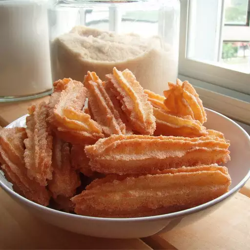

Back to Home Page
Churros

Golden and crispy churros are typically covered in sugar and cinnamon
How to Make Churros
You’ll find the full, step-by-step recipe below — but here’s a brief overview of what you can expect when you make homemade churros:
- In a heavy deep skillet or deep-fryer, heat oil to 360 degrees F (180 degrees C). Oil should be about 1 1/2 inches deep.
- In a medium saucepan, heat water and margarine to a rolling boil. Combine the flour and salt; stir into the boiling mixture. Reduce heat to low and stir vigorously until the mixture forms a ball, about 1 minute. Remove from heat and beat in the eggs one at a time. Spoon the mixture into a pastry bag fitted with a large star tip.
- Carefully squeeze out 4 inch long strips of dough directly into the hot oil. Fry 3 or 4 strips at once, until golden brown, about 2 minutes on each side. Remove from hot oil to drain on paper towels. Stir together the sugar and cinnamon; roll churros in the mixture while still hot.